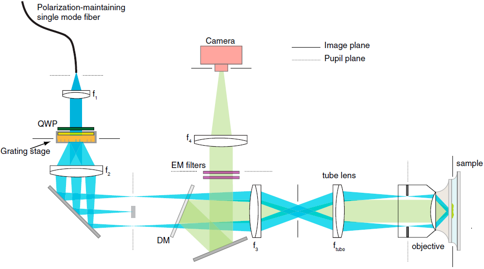

研究领域和方向
生物医学光谱学及成像(Biomed Spectroscopy and Micro-Imaging)
光谱显微图像分析(Spectroscopic Image Analysis)
生物超分辨显微成像(super-resolution imaging)
增强显示医疗设备(Augmented reality medical technology)
计量学建模及计算(Chemometrics Modeling and Assessment)
生医光子学技术开发及应用 (D&A of Biomed Photonics Tech.)
光谱生物分析化学(Spectroscopic Bioanalytical Chemistry)
分子光谱学及应用 (Molecular Spectroscopy and Application) (Raman、IR、Fluo、Abs、SHG)
红外光谱显微成像 (IR spectroscopic microimaging)

FTIRI 系统原理示意 (a) 透射模式; (b) 反射模式; (c) 衰减全反射模式
拉曼光谱检测技术 (Raman spectroscopy)

实时拉曼光谱系统原理示意
(Figure from Lui H, Zhao J, McLean D, et al. Cancer research,2012)
荧光显微成像 (Fluorescense microimaging)

(Figure from Ishikawa-Ankerhold H C, Ankerhold R, Drummen G P C. Molecules,2012)
三维超分辨显微成像 (3D super resolution microimaging)

化学计量学 (Chemomatrics)


偏光显微成像
承担项目
序号 |
项目编号 |
项目类别 |
|---|---|---|
1 |
61505079 |
国家自然科学基金青年科学基金项目 |
2 |
BK20150752 |
江苏省自然科学基金青年科学基金项目 |
3 |
1003-YAH15018 |
南京航空航天大学引进人才科研启动基金 |
4 |
61378087 |
国家自然科学基金面上项目 |
5 |
20133218120017 |
高等学校博士学科点专项科研基金 |
6 |
BK20151478 |
江苏省自然基金 |
7 |
1003-56YAH13005 |
南京航空航天大学引进人才启动基金 |